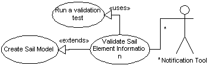

|
|
SailAway Project |
| Diagram |  |
|---|---|
| Name | Validate Sail Element Information |
| Iteration | Finished |
| Summary | Information passed to the System about elements of a Sail Model must be checked for validity before the element may be assumed to be a good part of a model. This validation check screens out elements with negative lengths, masses and other similar non-physical possibilities. |
| Basic Course of Events |
|
| Alternative Paths | If the System decides the information about the element is invalid, the Notification Tool will receive a copy of the test results for delivery to the user. |
| Exception Paths | . |
| Extension Points | . |
| Trigger | The System triggers this case after a user has provided information concerning a particular Sail Element. |
| Assumptions | . |
| Preconditions | New sail element information is present and flagged as needing validation. |
| Postconditions | This validator will stay out of the way and not cause any further interactions within the System after its initial job of validating a new or changed element is done. When it is done, the System will act upon the validity information provided by this validator. |
| Related Environment Rules | 1 |
| Author | Dr Alfred W Differ |
| Date |
2002/01/03 - Facade 2002/01/06 - Filled 2002/02/03 - Focused 2002/02/15 - Finished |